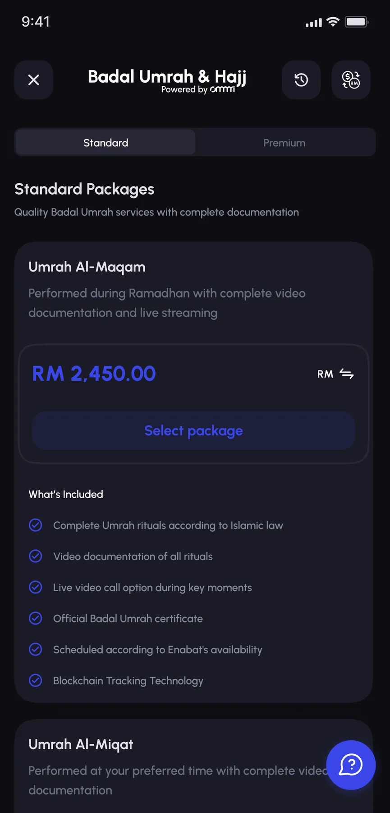
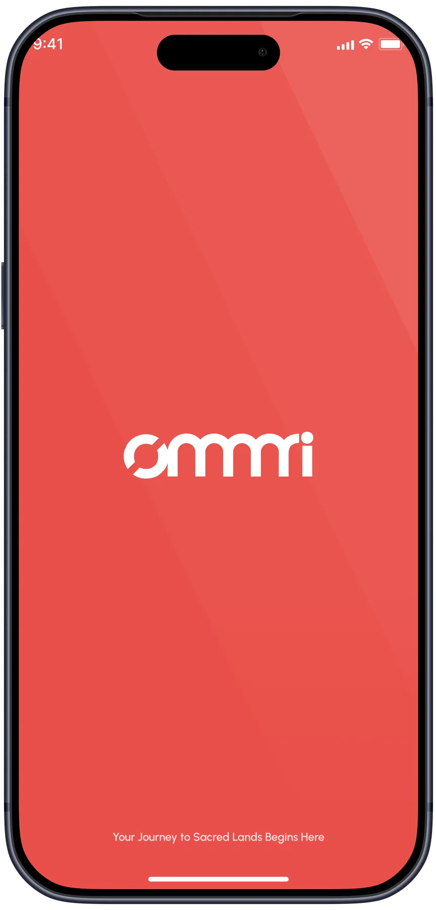
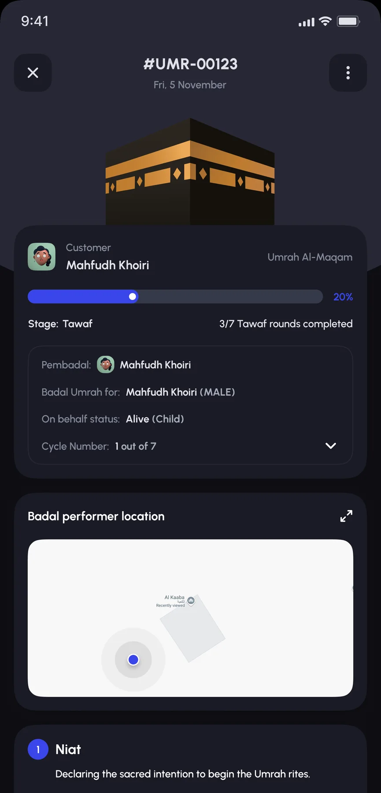

Work Mobile app
Ommri
Badal Umrah, performed on your behalf, verified end to end.
A two-sided marketplace connecting customers who've purchased a Badal Umrah or Hajj package with "pembadal", verified performers based in Mecca who complete the pilgrimage on their behalf, with GPS-tracked rituals and recorded proof at every step.



The context
A pilgrimage performed by someone else, trusted like your own.
Badal Umrah, having someone perform Umrah on your behalf, is a real and accepted practice for people who can't travel themselves: the elderly, the unwell, or those who've passed. It's also an easy thing to fake from a distance. Ommri Badal Umrah needed to make a stranger's pilgrimage, thousands of miles away, feel verifiable and personal instead of a leap of faith.
What I designed
Seven areas, split across two very different users.
Ommri Badal Umrah is genuinely two apps in one: a marketplace and booking flow for the customer buying a Badal Umrah package, and a field tool for the pembadal, the performer completing it in Mecca. Four areas on the customer side and three on the performer's show how the two connect.
Customer marketplace
A marketplace, not a form.
Booking a Badal Umrah starts like browsing any marketplace: Standard and Premium tiers, three named packages priced in Ringgit, each scoped to a specific schedule, Ramadhan, a preferred time, or Enabat's own calendar. Every package lists exactly what's included, video documentation, a live call option, an official certificate, blockchain-tracked records, so the price is never a mystery.
Customer booking
Booking, built around who it's for.
Badal Umrah is performed on someone else's behalf, so the booking flow asks for that person directly: their full name, whether they're living or have passed, and the customer's relationship to them. A government-officer-only installment option sits behind its own eligibility check, rather than being offered to everyone and rejected later at payment.
Customer tracking
Tracking, without guessing.
Once paid, a booking sits in a Pending, In Progress, or Completed tracker. Before a performer is assigned, the app says so plainly, "Awaiting Performer Assignment", with a short explanation of what happens next, rather than leaving the customer staring at an empty screen wondering if the payment even went through.
Personalized certificate
A certificate that names the person it was for.
Once every ritual stage is confirmed complete, the customer gets an official Badal Umrah certificate, addressed to whoever the pilgrimage was performed on behalf of, with the package name and completion date attached. It's designed to be downloaded and kept, not just glanced at inside the app.
Pembadal dashboard
A dashboard built around one task at a time.
A performer's day starts with a single ongoing task card: which customer, who the Umrah is for, a live ritual stage, and a reminder when a scheduled video call is coming up, so nothing has to be looked up separately across other screens.
Pembadal ritual tracking
Umrah, tracked like a real lap.
Every stage of the Umrah is verified with the same rigor, not just logged. Tawaf, circling the Kaaba seven times, is tracked two ways at once: a live GPS trace of the actual path walked, and a lap timer recording each individual circuit. "Umrah complete" ends up meaning something more specific than a checked box, it means seven verified laps around the Kaaba, each with its own time, the same standard carried through every other ritual step.
Pembadal proof
Proof that holds up.
Each ritual step closes with a recorded video, Niat declared on camera, not just a self-reported checklist, and a full step-by-step summary once Tawaf, Sa'i, and Tahalul are done, timestamped and ready to hand to the customer as evidence their pilgrimage was actually performed.
More from the app
A wider look.
Outcome
A two-sided trust problem, designed end to end.
Ommri Badal Umrah isn't a simple checkout flow with a confirmation email, it's a live operational bridge between someone paying from home and someone performing rituals in Mecca in real time. The GPS-verified Tawaf tracking turned out to be the detail that sells the whole product: it's the difference between "trust us" and being able to see the actual lap.